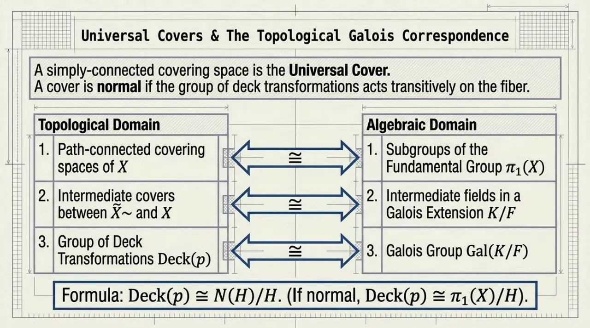

기둥 2 · 무리가 공간을 움직이는 법 · 11장
갈루아 대응 — 덮개와 부분군의 짝짓기
보편 덮개, 덮개와 부분군의 짝, 그리고 층 바꾸기 세기
보편 덮개, 덮개와 부분군의 짝, 그리고 층 바꾸기 세기
핵심 질문 — 원 위의 덮개를 전부 모으면, 정수의 부분군과 어떻게 하나씩 짝지어질까?
10장에서 고리를 k바퀴 돌면 층이 k만큼 바뀌었어요. 「제자리로 돌아오게 하는 바퀴 수」를 모으면 부분군이 되고, 덮개마다 부분군이 하나씩 짝지어져요. 방정식 이론의 「갈루아 대응」(중간체 ↔ 부분군)과 똑같은 모양이라 위상적 갈루아 대응이라 불러요.
숫자 요약은 이 장의 예시 계산에서 나온 값입니다(실제 데이터가 아닌 설명용 값).
계산배틀 2회전! 종목은 「나머지 계산」. 6겹 덮개의 층 바꾸기는 몇 가지일까요?
나머지 계산은 숫자 세기랑 비슷해. 내가 검산할게.
행렬·벡터, 복잡한 공식을 몰라도 됩니다. 그림을 움직여 보고, 밑줄 친 말을 누르면 뜻이 나옵니다.
고리가 모두 펼쳐진 가장 큰 덮개. 원에서는 끝없는 나선(수직선).
n겹 덮개 ↔ n의 배수 모음 nℤ. 큰 덮개일수록 짝인 모음은 작음(방향이 거꾸로).
n겹 덮개의 층 바꾸기는 n가지, 계산은 나머지 n의 덧셈.
원자료(영어) 그림 10번을 한국어로 다시 그렸어요. 원자료에서 바로잡은 곳은 이 그림에 이미 반영했어요.
이 페이지 사용법: 밑줄 친 말을 누르면 뜻이 나옵니다(Esc로 닫기). 단계마다 그림을 직접 움직여 보고, 끝의 확인 퀴즈로 점검하세요. 앞 장: 10 덮개 공간과 길 — 빙글빙글 주차장
조교 둘이 「n겹 덮개의 층 바꾸기는 몇 가지?」, 「12의 약수만큼 덮개가 있나?」를 숫자로 겨뤄요. 수강생들은 나머지 계산으로 검산합니다.
1조는 표를 그려서 짝을 맞출게요.
…2조는 나머지 덧셈표.
원 위의 덮개가 몇 종류인지, 서로 어떻게 포개지는지를 부분군 목록 하나로 다 알 수 있어요.
「덮개 모양」 같은 그림 문제를 「약수」, 「나머지」 같은 계산 문제로 바꿔요.
19세기 방정식 이론(갈루아)과 20세기 위상수학이 같은 구조라는 것은 이 시리즈의 큰 볼거리예요.
이 장의 핵심은 한 줄이에요: 「n겹 덮개의 층 바꾸기는 n가지, 계산은 나머지 n으로」. 기호로 쓴 공식은 접기 상자에만 두었어요.
상황 질문 — 나선형 주차장의 층이 끝없이 이어져 있다면, 그 안에서 「제자리로 돌아오는 원형 길」이 있을까요?
끝없는 나선 계단에서는 한 바퀴 돌 때마다 다른 층에 도착해서, 제자리로 돌아오는 원형 길이 없어요(0바퀴 길 빼고).
원의 보편 덮개 ℝ → 원에서 고리를 들어 올리면, 감은 수가 0일 때만 닫혀요. 보편 덮개는 단일 연결이고, 다른 모든 덮개 위에 「얹혀」 있어요.
바퀴 수를 0, 1, −1, 2로 바꾸며 출발점과 도착점을 비교하세요.
0바퀴만 닫히니까, 보편 덮개는 고리가 거의 없는 심심한 공간이네요!
심심한 게 아니라 「다 펼쳐진」 거야. 그래서 모든 덮개의 꼭대기에 있지.
원자료 「Universal Covers & The Topological Galois Correspondence」 맨 위 상자: 단일 연결 덮개 = 보편 덮개, 정규 덮개의 뜻.

상황 질문 — 원 위의 덮개(n겹 고리)와 정수의 부분군(n의 배수 모음)을 나란히 적으면, 빠짐없이 짝지어질까요?
nℤ ⊂ mℤ 같은 포함 기호가 나오면 헷갈려요. 12ℤ ⊂ 4ℤ 맞아요?
학교 수학으로 보면: 중학교 약수와 배수: 12의 배수는 모두 4의 배수예요(12 = 4 × 3). 그래서 「12의 배수 모음」이 「4의 배수 모음」 안에 들어가요.
| 식 조각 | 읽는 법 | 뜻 |
|---|---|---|
| nℤ | 엔 제트 | n의 배수 전체 {…, −n, 0, n, 2n, …} |
| 12ℤ ⊂ 4ℤ | 12의 배수는 모두 4의 배수 (4가 12의 약수일 때) | |
| [ℤ : nℤ] = n | 부분군의 지수 = 덮개의 겹 수 |
12ℤ ↔ 12겹 덮개, 4ℤ ↔ 4겹 덮개
12ℤ ⊂ 4ℤ (작은 부분군) ↔ 12겹이 4겹 위에 3겹으로 얹힘 (큰 덮개)
12의 약수 1, 2, 3, 4, 6, 12 → 12겹 덮개 아래 중간 덮개 6개
방정식 이론: 중간체 ↔ 갈루아 군의 부분군 — 같은 모양
부분군이 작을수록 덮개가 크네요. 거꾸로 맞물리는 게 핵심이구나!
약수 표를 보면 12를 나누는 수가 1, 2, 3, 4, 6, 12로 딱 정해져요. 덮개도 이 수만큼, 이 순서대로 포개져요.
위상적 갈루아 대응: 원 위의 덮개 하나마다 「제자리로 돌아오는 바퀴 수 모음」이 하나씩 짝지어져요. n겹 덮개 ↔ n의 배수 모음. 큰 덮개일수록 짝인 모음은 작아져요. 19세기 방정식 이론의 「갈루아 대응」과 같은 모양이라 이 이름이 붙었어요.
겹 수를 12의 약수로 바꾸며 오른쪽 표에서 짝을 찾아보세요. 5겹은요?
5겹은 12의 약수가 아니니까 존재하지 않는 덮개예요!
5겹 덮개는 있어. 다만 12겹 덮개 「아래」에 끼지 않을 뿐이야.
원자료 가운데 표: 위상 쪽(길 연결 덮개, 중간 덮개, 덱 변환군) ↔ 대수 쪽(기본군의 부분군, 갈루아 확대의 중간체, 갈루아 군).
상황 질문 — 회전 초밥 벨트를 통째로 접시 한 자리만큼 돌리면, 위에서 본 벨트 모양은 바뀔까요?
ℤ/6 같은 「나누기 집합」은 처음 봐요. 정수를 6으로 나눈 거예요?
학교 수학으로 보면: 초등학교의 나머지예요. 정수를 6으로 나눈 나머지 0, 1, 2, 3, 4, 5만 남기고, 더하면 다시 나머지를 취해요(시계 계산과 같아요).
| 식 조각 | 읽는 법 | 뜻 |
|---|---|---|
| Deck(p) | 덱 피 | 덮개를 통째로 옮기는 변환 모음 |
| π₁(X)/H | 파이 원 엑스 나누기 에이치 | 감은 수에서 「제자리 바퀴 수 H」를 0으로 보는 계산 |
| ℤ/6 | 제트 나누기 6 | 나머지 6의 덧셈: 4 + 5 = 9 → 3 |
6겹 덮개: 층 바꾸기 +0, +1, +2, +3, +4, +5 → 6가지
+4 다음 +5 = +9 = +3 (나머지 6)
+6은 +0과 같음 → 7번째는 없음
π₁/H = ℤ/6ℤ → 원소 6개 = 덱 변환 6가지 ✓
시계가 12시 다음 1시가 되는 거랑 같은 계산이네요. 이제 Deck ≅ π₁/H가 안 무서워요.
회전 초밥 벨트를 접시 한 자리만큼씩 돌리는 방법은 접시 자리 수만큼 있어요. 자리 수만큼 돌리면 처음과 같아요.
덱 변환(층 바꾸기)은 바닥에서 보면 아무것도 안 바뀌게 덮개 전체를 미끄러뜨리는 변형이에요. 원의 n겹 덮개에서는 「k층씩 돌리기」 n가지이고, 두 번 하면 나머지 n의 덧셈이 돼요. (기호 공식은 아래 접기 상자)
겹 수 6, 층 바꾸기 j를 0부터 11까지 움직여 보세요. 몇 가지가 서로 다른가요?
j가 0부터 11까지니까 12가지죠!
j = 6을 봐. j = 0이랑 화살표가 같아?
원자료 맨 아래 공식 상자: Deck(p) ≅ N(H)/H, 정규 덮개면 Deck(p) ≅ π₁(X)/H.
H = p*π₁(X̃, x̃₀) ≤ π₁(X, x₀). 덱 변환군은 H의 정규화군 N(H)를 H로 나눈 몫과 동형이다. 덱 변환군이 올 p⁻¹(x₀) 위에 추이적으로 작용하는 것(정규 덮개)과 H가 정규 부분군인 것은 동치이며, 이때 Deck(p) ≅ π₁(X)/H이다.
하루가 AI에게 「원의 3겹 덮개에서 덱 변환은 몇 개인가요?」라고 물었어요.
AI가 「경우의 수 공식(3!)」을 바로 꺼내면, 그 공식이 세는 대상이 문제의 대상과 같은지 확인하세요. 「아무렇게나 섞기」와 「이어진 채 옮기기」는 달라요.
원의 6겹 덮개에서 덮개를 통째로 미끄러뜨리는 덱 변환의 개수를 두고 계산배틀!
「6가지. +6은 +0과 같거든.」
「층이 6개니까 6 × 6 = 36가지!」
누가 맞을지 먼저 예상해 보고 단추를 누르세요. 판정은 계산 결과로만 합니다.
개념정리 흐름: 보편 덮개와 기본군 → 위상적 갈루아 대응 → 층 바꾸기 (덱 변환)
| 개념 | 한 줄 뜻 | 일상 비유 | 비유의 한계 |
|---|---|---|---|
| 기본군 | 고리를 감은 수로 모은 군 (원: ℤ) | 몇 바퀴 감았나 | 복잡한 공간에서는 순서가 중요한(비가환) 군 |
| 보편 덮개 | 모든 고리가 펼쳐진 덮개 | 끝없는 나선 계단 | 이상한 공간에서는 없을 수 있음 |
| 위상적 갈루아 대응 | 덮개 ↔ 부분군, 포함은 거꾸로 | 약수 표 | 바닥 공간 조건과 켤레 묶기가 필요 |
| 덱 변환 (층 바꾸기) | 바닥을 안 바꾸고 덮개를 옮기기, n겹이면 n가지 | 회전 초밥 벨트 | 복잡한 바닥 공간에서는 개수가 더 적을 수 있음 |
계산배틀 결과: 초파리 연구원 승. 6 × 6이 아니라 나머지 6!
검산 끝. +4 다음 +5 = +3, 맞았어.
곱하기가 아니라 나머지였다니….
다음 시간부터 기둥 3! 「끝에서 보는 법」이래요!
다음 장 예고: 12장 조별 토론에서는 「번역기」 같은 함자를 다뤄요. 이산 위상이 왜 「가장 자유로운」 위상인지, 함수 개수를 세며 확인해요.